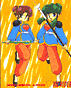

I Personaggi - Dalla Cina con Furore!
|
I Personaggi - Dalla Cina con Furore! |
Anche se non tutti sono una famiglia nel senso "anagrafico" del termine, esiste in Ranma una "gang" di cinesi nutrita e molto assortita (nonché importante per la serie). Questo è normale dal momento che in Ranma tutto ha origine dalla Cina...
| Obaba |
È la bisnonna di Shampoo, ed è molto ma molto vecchia, nonché potente nella conoscenza delle arti marziali. Da quando è arrivata in Giappone, tra le altre cose, gestisce il ristorante cinese "Neko-Hanten" insieme alla sua dolce nipotina. Tanto per cambiare anche Obaba ritiene Ranma responsabile di diverse cose tra le quali la maledizione che ha colpito Shampoo, e cerca in tutti i modi di farli sposare, ricorrendo anche a dei ricatti veri e propri. Riconosce in Ranma un ragazzo forte e abile e non manca mai di metterlo alla prova nelle arti marziali. Nonstante sia una vecchiaccia "mummiosa", non le piacciono molto le battute sul suo aspetto, credendo a volte perfino di essere una bellezza. Comunque ha una grande conoscenza di tutte le tecniche di arti marziali che si tramandano nel suo clan e di magia.
Apparizione: Nettohen episodio 3. Volume 5 parte 6.
Significato del Nome: il suo vero nome non viene rivelato fino a quando Happosai non la riconosce, molto avanti nella serie (episodio Nettohen 37 o Volume 10 parte 1) e si scopre che si chiama "Cologne". Fino ad allora viene chiamata "Obaba", anche se in realtà andrebbe scritto "O-Baba" cioè "Possibile"-"Posto di Montagna Accidentato", che in Cinese non ha alcun significato!! Comunque Obaba viene anche utilizzato come appellativo per indicare la "nonna".
Nota: in Italia, nella versione trasmessa in tv, Cologne è stato cambiato in "Colomba".
| Shampoo |
Probabilmente è quella che viene considerata come la migliore "bambola sexy" di tutta la serie. È una ragazza molto carina, disinibita, agile e a volte anche violenta e crudele. Subito dopo l'esperienza delle sorgenti maledette, la Guida Cinese porta Ranma e Genma al Villaggio Joketsuzoku dove Shampoo sta battendo tutte le sue avversarie nella gara annuale che si tiene al suo villaggio. Ranma e Genma, arrivando sfiniti ed affamati (e anche trasformati!) si siedono ad un banchetto preparato di tutto punto, cominciando ad ingoiare senza ritegno quello che costituiva il premio del torneo. Indispettita da questo, Shampoo invita Ranma (ragazza) a battersi con lei ma viene inesorabilmente battuta. Dal momento che è stata battuta da una donna straniera Shampoo, secondo la legge del suo villaggio, si avvicina a Ranma e le dà il cosiddetto "bacio della morte", il che significa che Shampoo inseguirà Ranma per ogni dove, finché non l'avrà uccisa.
Quando giunge a Tokyo sulle tracce di Ranma-chan, Shampoo giunge al dojo dei Tendo dove, per la prima volta, incontra Ranma-kun. A questo punto, Shampoo cerca di attaccare Akane credendo che nascondesse Ranma-chan, e così Ranma-kun, nel tentativo di difendere Akane, batte di nuovo Shampoo la quale, invece di dargli il "bacio della morte", questa volta dichiara il suo amore a Ranma-kun chiamandolo "marito!".
Questa nuova svolta è dovuta sempre alla legge del villaggio di origine di Shampoo. Infatti, se una donna del clan delle amazzoni viene battuta da uno straniero ci sono due possibilità: se lo straniero era una donna, questa va uccisa da colei che è stata battuta; se lo straniero era un uomo, devono sposarsi. È per questo che Shampoo, almeno all'inizio, si ritrova nella singolare situazione in cui odia a morte Ranma-chan, ma vuole sposare Ranma-kun!
Secondo la sua natura crudele, Shampoo cerca in tutti i modi di eliminare chi ostacola il suo amore per Ranma-kun, per esempio prova a far perdere ad Akane ogni ricordo di Ranma grazie ad una sua tecnica segreta di lavaggio del cervello (anzi della testa) con uno "shampoo" speciale a base di una medicina cinese in grado di manipolare i ricordi delle persone.
Un giorno, distrutta dalla scoperta del segreto di Ranma e dopo aver (momentaneamente) perso ogni speranza di accasarsi con lui, Shampoo torna con Obaba al campo di allenamento di Jusenkyo, e durante l'allenamento, viene spinta nella Maoniichuan, cioè la sorgente del gatto affogato. Shampoo si rende conto a questo punto che, nonostante tutto, Ranma è un vero uomo e dato che la tradizione del suo clan vuole che le amazzoni debbano sempre sposare un uomo forte, torna con Obaba in Giappone per cercare con tutti i mezzi leciti e non di sposarsi con Ranma. Shampoo fa anche la cameriera al ristorante Neko Hanten e consegna "ramen" a domicilio in bicicletta, investendo persone e volando sui tetti!
Apparizione: Episodio 15. Volume 4 parte 4. (Ritorna poi: Nettohen episodio 2. Volume 5 parte 1)
Significato del Nome: l'adattamento in Shampoo, è dovuto probabilmente al fatto che una delle sue tecniche consiste proprio in una specie di "shampoo" e al fatto che il nome in originale ha più o meno questo suono (in cinese: X'ian pu'). Il suo nome "Shan p`'u", sarebbe "corallo"-"giada grezza" e non ha alcun significato particolare in cinese. (Nota: In Italia ci sono purtroppo molte versioni del suo nome, la maggior parte delle quali sono errate!)
Segni Particolari: lunghi capelli viola. Veste abiti cinesi e porta degli ornamenti attorno ai capelli, che le rimangono anche quando è una gatta.
Parlata: parla secondo lo stereotipo dei cinesi che parlano giapponese (formando molti aggettivi con "-teki", usando "aru" come postfisso). Utilizza frasi di conversazione cinesi-katakana:
Armi: utilizza i "ciat-shin-chon" (mazze con delle grandi sfere sulla punta) e a volte una grande spada ricurva
| Linlin e Lanlan |  |
Sono le "sorelle minori" (non sorelle di sangue) di Shampoo abitanti nel villaggio del suo clan, che si sono allenate molto duramente in tecniche di arti marziali ridicole quando hanno visto Ranma battere Shampoo. Sono arrivate in Giappone solo per chiedere a Shampoo come ha ucciso Ranma e, quando scoprono che non l'ha fatto, ci provano loro. Shampoo le ferma e dà loro il famoso "bacio della morte", rattristandole perché ha tradito la sua gente. Alla fine, però, sembra che anche loro si innamorino del povero Ranma, ancora una volta involontario rubacuori.
Apparizione: Nettohen episodio 40. (Ritornano poi: Nettohen episodio 72).
Significato del Nome: dai nomi di due famose sorelle cinesi esistenti realmente, che cantavano una canzone dal titolo "LINLIN LANLAN ryuen!", che era il jingle pubblicitario di un ristorante.
Parlata: come per Shampoo.
| Mousse |  |
 |
È il miope ragazzo cinese follemente innamorato di Shampoo. I due sono amici fin dall'infanzia ed è da allora che lui ama Shampoo la quale, però, l'ha sempre rifiutato anche perché, quando erano ancora bambini, l'ha battuto. Anche se erano bambini e la loro sfida era più che altro un gioco, secondo la legge del suo villaggio Shampoo non può sposare Mousse (e neanche lo vuole!) ma Mousse non si è rassegnato a questo e cerca in tutti i modi di sconfiggere Ranma-kun che è riuscito invece a rubargli la "fidanzata". È caduto anche lui in una delle sorgenti e la sua maledizione riguarda il trasformarsi in una papera bianca e con gli occhiali. Ha cominciato anche a lavorare (anzi più che altro a fare lo schiavo) al "Neko Hanten".
Apparizione: Nettohen episodio 5. Volume 5 parte 7.
Significato del Nome: Mousse, non è evidentemente un nome cinese, ma significa proprio mousse...
Segni Particolari: un lungo abito cinese bianco e capelli neri lunghi. Porta degli occhiali molto spessi altrimenti non distingue neanche le persone. Gli occhiali gli restano anche quando si trasforma.
Armi: qualunque tipo di oggetto che riesce a tirare fuori dalla sua casacca.
| La Guida di Jusenkyo |  |
È la guida cinese che accompagna Genma e Ranma nel loro viaggio, spiegandogli poi le maledizioni relative alle varie sorgenti di Jusenkyo e l'incredibile varietà di gente che vi è caduta dentro. Ovviamente quando avverte i due sulla pericolosità delle sorgenti, loro non gli danno minimamente ascolto e continuano ad allenarsi sulle pozze... con le conseguenze che tutti sappiamo! La Guida accompagna poi Genma e Ranma (trasformati) al villaggio di Joketsuzoku, dove gli fa da traduttore con le "amazzoni" e gli fa capire i guai in cui si sono cacciati! Il suo nome non si conosce.
Apparizione: Episodio 1 (riappare poi ogni tanto nel corso della serie)
Parlata: valgono le stesse considerazioni fatte per Shampoo.
<<-RITORNA ALL'INDICE DEI PERSONAGGI
| Grafica, impaginazione e testi sono (c) di Francesco "Nibunnoichi" Giordano e non possono essere usati senza il consenso dell'autore. |